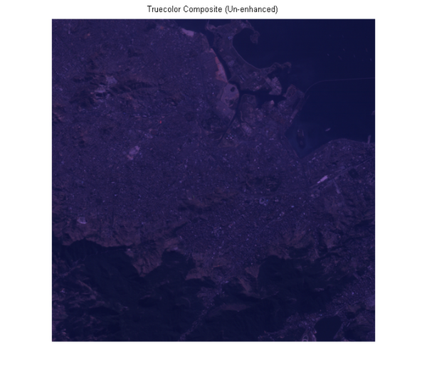
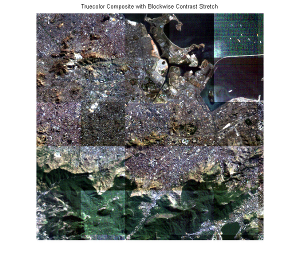
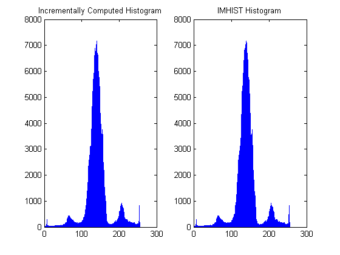
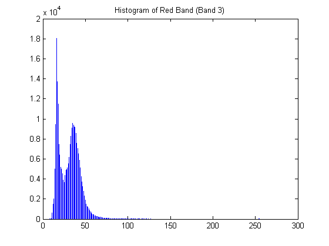
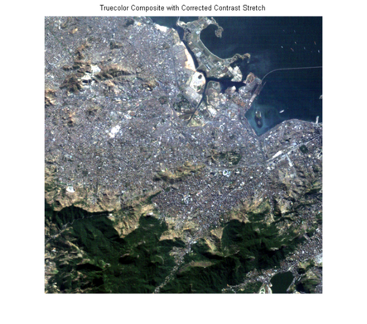

大きなイメージの統計量の計算
関数 blockproc は、イメージ ブロックに演算を適用したり、結果を集計したり、結果を新しいイメージとして返す際に最適です。多くの画像処理アルゴリズムではイメージに関する "グローバルな" 情報が必要ですが、一度に 1 つのイメージ ブロックのみを検討するときにはこの情報を使用できません。これらの制約は、大きすぎてメモリに完全には読み込めないイメージを処理する場合に問題になります。このデモでは、blockproc を使用して大きなイメージの統計量を計算し、その情報を適用してイメージ ブロックをより正確に処理する方法について説明します。
このデモでは、複数のスペクトルのカラー合成イメージの強調のデモに記載されている作業と同じ作業を実行しますが、blockproc を使用する大きなイメージに合わせて変更しています。Erdas LAN ファイル rio.lan の可視帯域を強調します。これらのタイプのブロック処理手法は通常大きなイメージで効果的ですが、小さなイメージはこのデモの目的に役立ちます。
目次
手順 1: トゥルーカラー合成の作成
blockproc を使用して、 rio.lan からデータ (Landsat Thematic Mapper 撮影画像を Erdas LAN ファイル形式で含んでいるファイル) を読み取ります。blockproc には TIFF ファイルと JPEG2000 ファイルのみを読み取る組み込みサポートがあります。他のタイプのファイルを読み取るには、イメージ アダプター クラスを記述して特定のファイル形式の I/O をサポートする必要があります。この例では、あらかじめ組み込まれているイメージ アダプター クラス、LanAdapter を使用します。この関数は LAN ファイルの読み取りをサポートします。イメージ アダプター クラスの記述方法の詳細は、LanAdapter クラスの作成方法を説明しているユーザーズ ガイドのチュートリアルを参照してください。
Erdas LAN 形式には帯域 3、2、および 1 にそれぞれ可視赤色、緑色、および青色スペクトルが含まれています。blockproc を使用して可視帯域を RGB イメージに抽出します。
% Create the LanAdapter object associated with rio.lan. input_adapter = LanAdapter('rio.lan'); % Select the visible R, G, and B bands. input_adapter.SelectedBands = [3 2 1]; % Create a block function to simply return the block data unchanged. identityFcn = @(block_struct) block_struct.data; % Create the initial truecolor image. truecolor = blockproc(input_adapter,[100 100],identityFcn); % Display the un-enhanced results. figure; imshow(truecolor); title('Truecolor Composite (Un-enhanced)');
結果のトゥルーカラー イメージは、複数のスペクトルのカラー合成イメージの強調のデモの paris.lan のイメージに似ています。RGB イメージはぼんやりしており、コントラストがほとんどありません。
手順 2: イメージの強調 - 最初の試み
最初に、blockproc を使用してデータをダイナミック レンジ全体に引き伸ばします。この最初の試みでは、データの各ブロックに stretchlim と imadjust を個別に呼び出す新しい関数ハンドルのみを定義します。
adjustFcn = @(block_struct) imadjust(block_struct.data,... stretchlim(block_struct.data)); truecolor_enhanced = blockproc(input_adapter,[100 100],adjustFcn); figure imshow(truecolor_enhanced) title('Truecolor Composite with Blockwise Contrast Stretch')
結果が間違っていることがすぐにわかります。問題は、関数 stretchlim が入力イメージ上のヒストグラムを計算し、この情報を使用してストレッチ限度を計算することです。各ブロックは隣接するブロックから分離して調整されるため、ブロックはそれぞれのローカル ヒストグラムから異なる限度を計算します。
手順 3: ヒストグラムのアキュムレーター クラスの確認
イメージのダイナミック レンジ全般にわたるデータの分布を確認するには、3 つの可視帯のヒストグラムをそれぞれ計算します。
十分に大きなイメージを処理する場合は、imhist を呼び出すだけではイメージ ヒストグラムを作成できません。徐々にヒストグラムを作成する 1 つの方法は、イメージを移動するときに各ブロックのヒストグラムを合計するクラスを blockproc で使用することです。
HistogramAccumulator クラスを調べます。
type HistogramAccumulator
% HistogramAccumulator Accumulate incremental histogram.
% HistogramAccumulator is a class that incrementally builds up a
% histogram for an image.This class is appropriate for use with 8-bit
% or 16-bit integer images and is for educational purposes ONLY.
% Copyright 2009 The MathWorks, Inc.
% $Revision: 1.1.4.2.2.1 $ $Date: 2010/07/29 21:28:50 $
classdef HistogramAccumulator < handle
properties
Histogram
Range
end
methods
function obj = HistogramAccumulator()
obj.Range = [];
obj.Histogram = [];
end
function addToHistogram(obj,new_data)
if isempty(obj.Histogram)
obj.Range = double(0:intmax(class(new_data)));
obj.Histogram = hist(double(new_data(:)),obj.Range);
else
new_hist = hist(double(new_data(:)),obj.Range);
obj.Histogram = obj.Histogram + new_hist;
end
end
end
end
このクラスは関数 hist を呼び出す単純なラッパーで、データをヒストグラムに徐々に追加できるようにします。このラッパーは blockproc 固有ではありません。HistogramAccumulator クラスの次の簡単な使用例を確認します。
% Create the HistogramAccumulator object. hist_obj = HistogramAccumulator(); % Split a sample image into 2 halves. full_image = imread('liftingbody.png'); top_half = full_image(1:256,:); bottom_half = full_image(257:end,:); % Compute the histogram incrementally. hist_obj.addToHistogram(top_half); hist_obj.addToHistogram(bottom_half); computed_histogram = hist_obj.Histogram; % Compare against the results of IMHIST. normal_histogram = imhist(full_image); % Examine the results.The histograms are numerically identical. figure subplot(1,2,1); stem(computed_histogram,'Marker','none'); title('Incrementally Computed Histogram'); subplot(1,2,2); stem(normal_histogram','Marker','none'); title('IMHIST Histogram');
手順 4: BLOCKPROC で HistogramAccumulator クラスを使用
HistogramAccumulator クラスを blockproc で使用して、rio.lan のデータの赤色帯域のヒストグラムを作成します。データの各ブロックに addToHistogram メソッドを呼び出す blockproc の関数ハンドルを定義できます。ヒストグラムを表示すると、利用可能なダイナミック レンジの一部にデータが集中しているのがわかります。他の可視帯にも同様の分布があります。これが、元のトゥルーカラー合成がぼんやりと見える一因です。
% Create the HistogramAccumulator object. hist_obj = HistogramAccumulator(); % Setup blockproc function handle addToHistFcn = @(block_struct) hist_obj.addToHistogram(block_struct.data); % Compute histogram of the red channel.Notice that the addToHistFcn % function handle does generate any output.Since the function handle we % are passing to blockproc does not return anything, blockproc will not % return anything either. input_adapter.SelectedBands = 3; blockproc(input_adapter,[100 100],addToHistFcn); red_hist = hist_obj.Histogram; % Display results. figure stem(red_hist,'Marker','none'); title('Histogram of Red Band (Band 3)');
手順 5: コントラスト ストレッチを使用してトゥルーカラー合成を強調
イメージに適切なコントラストのストレッチを行うことができます。通常のインメモリ ワークフローの場合、関数 stretchlim を使用するだけで imadjust の引数を計算できます (lipexlanstretch デモの場合と同様です)。しかし、これまで見てきたように、大きなイメージを処理する場合、stretchlim はフル イメージ ヒストグラムに依存するため簡単には blockproc に合わせて使用できません。
各可視帯のイメージ ヒストグラムを計算したら、imadjust の正しい引数を手作業で計算します (stretchlim の場合と同様です)。
まず、緑色帯域と青色帯域のヒストグラムを計算します。
% Compute histogram for green channel. hist_obj = HistogramAccumulator(); addToHistFcn = @(block_struct) hist_obj.addToHistogram(block_struct.data); input_adapter.SelectedBands = 2; blockproc(input_adapter,[100 100],addToHistFcn); green_hist = hist_obj.Histogram; % Compute histogram for blue channel. hist_obj = HistogramAccumulator(); addToHistFcn = @(block_struct) hist_obj.addToHistogram(block_struct.data); input_adapter.SelectedBands = 1; blockproc(input_adapter,[100 100],addToHistFcn); blue_hist = hist_obj.Histogram;
ここで各ヒストグラムの CDF を計算し、imadjust を呼び出す準備をします。
computeCDF = @(histogram) cumsum(histogram) / sum(histogram); findLowerLimit = @(cdf) find(cdf > 0.01, 1, 'first'); findUpperLimit = @(cdf) find(cdf >= 0.99, 1, 'first'); red_cdf = computeCDF(red_hist); red_limits(1) = findLowerLimit(red_cdf); red_limits(2) = findUpperLimit(red_cdf); green_cdf = computeCDF(green_hist); green_limits(1) = findLowerLimit(green_cdf); green_limits(2) = findUpperLimit(green_cdf); blue_cdf = computeCDF(blue_hist); blue_limits(1) = findLowerLimit(blue_cdf); blue_limits(2) = findUpperLimit(blue_cdf); % Prepare argument for IMADJUST. rgb_limits = [red_limits' green_limits' blue_limits']; % Scale to [0,1] range. rgb_limits = (rgb_limits - 1) / (255);
新しい adjustFcn を作成してグローバルなストレッチ制限を適用し、blockproc を使用してトゥルーカラー イメージを調整します。
adjustFcn = @(block_struct) imadjust(block_struct.data,rgb_limits); % Select full RGB data. input_adapter.SelectedBands = [3 2 1]; truecolor_enhanced = blockproc(input_adapter,[100 100],adjustFcn); figure; imshow(truecolor_enhanced) title('Truecolor Composite with Corrected Contrast Stretch')
結果のイメージは大幅に改善されました。データはダイナミック レンジに大きく広がり、blockproc を使用すると、メモリにイメージ全体が読み込まれることはありません。